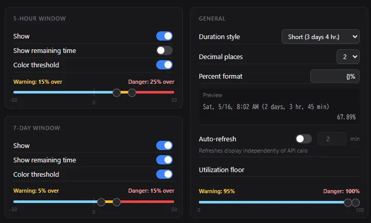

This extension displays elapsed-time progress bars for Claude's 7-day and 5-hour usage windows. It can also show the reset date and remaining time.
Monitor your usage and plan ahead to get the most out of Claude.
When your usage outpaces elapsed time, the bar changes color in two stages — Warning and Danger — so you can spot overconsumption at a glance.
If usage is even higher, the bar turns Danger color.
As time passes and the window progresses, the bar returns to its normal color.
Color thresholds can be disabled or adjusted in the options. Additionally, we previously displayed a warning when the site usage exceeded 80%, but we've now made it so that warning is suppressed. This can be configured in "Utilization floor".

The options screen is in English only, but dates and durations are displayed in the language configured in your Claude account.
This extension is an unofficial tool and is not affiliated with or endorsed by Anthropic or Claude.
We have only confirmed that it works with "Pro" and "Max" versions.
100% Client-Side: This extension processes data only within your browser. No data is ever collected or transmitted to external servers.
Verifiable Code: To ensure full transparency, the source code is public. Anyone can inspect how the extension handles data.
Source Code: GitHub
Dependence on Page Design: This extension relies on the current design of the target website. If the website updates its UI, this extension may stop working or cause layout issues.
In Case of Issues: If you experience any display problems or malfunctions, please disable or remove the extension immediately.
Disclaimer of Liability: The developer shall not be held responsible for any issues or damages caused by the use of this software. Use at your own risk.